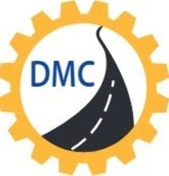

Key Considerations for Successful Road Construction Projects
Planning, coordination and quality control support reliable road project delivery.
Read Article →
TURQ DUMYAT
Loading website · TURQ DUMYAT Technical Contracting LLC
TURQ DUMYAT Technical Contracting LLC delivers professional road contracting, road maintenance, civil works and related infrastructure solutions across Abu Dhabi and the UAE.
Professional contracting support for road construction, maintenance and related civil infrastructure works.
Construction & Contracting
Infrastructure & Supporting Works
Abu Dhabi Based Operations
Our services are organized around the practical requirements of road construction, maintenance and supporting infrastructure projects.
We focus on professional planning, safe execution, quality workmanship and dependable communication.
Based in Musaffah, Abu Dhabi, TURQ DUMYAT Technical Contracting LLC supports clients, developers, consultants and project stakeholders with road and related civil contracting services.
Discover TURQ DUMYATPractical perspectives on road construction, maintenance and infrastructure delivery.
Planning, coordination and quality control support reliable road project delivery.
Read Article →Regular maintenance can help protect pavement performance and extend asset life.
Read Article →Good coordination helps reduce disruption and improve project efficiency.
Read Article →Send your project requirements to info@dumyat.ae or request a quotation.